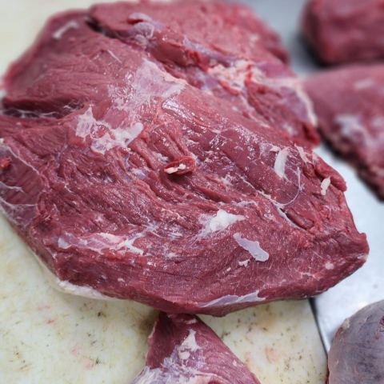

About
เกี่ยวกับ
Franco Siam Meat Co., Ltd., an expert in processing and distributing world-class meat products, distributes Pon Yang Kham beef from the Pon Yang Kham Cooperative, delivered directly from the farm to consumers. Pon Yang Kham beef comes from Thai-French hybrid cows with a meticulous raising and production process. This results in exceptionally high quality beef. The meat is juicy, soft, and smooth with a unique identity. Pon Yang Kham beef is the answer to perfection that you can't miss!
บริษัท ฟรังโก้ สยาม มีท จำกัด ผู้เชี่ยวชาญด้านการแปรรูปและจัดจำหน่ายผลิตภัณฑ์เนื้อสัตว์ระดับสากล จัดจำหน่ายเนื้อโคขุนโพนยางคำ จากสหกรณ์โพนยางคำ ส่งตรงจากฟาร์มสู่มือผู้บริโภค เนื้อโคขุนโพนยางคำ เป็นโคลูกผสม Thai-French เป็นเนื้อที่มีคุณภาพ ด้วยกระบวนการเลี้ยงและผลิตที่พิถีพิถัน เนื้อฉ่ำ นุ่ม ละมุนลิ้น มีเอกลักษณ์เฉพาะตัว เนื้อโคขุนคือคำตอบของความสมบูรณ์แบบที่คุณห้ามพลาด!
#francosiammeats #ฟรังโก้สยามมีท #เนื้อโคขุนโพนยางคำ #เนื้อคุณภาพ
Pon Yang Kham beef
จุดเริ่มต้น เนื้อโคขุนโพนยางคำ
The beef originated in Pon Yang Kham village, Non Hom subdistrict, Mueang district, Sakon Nakhon province. It was started with a government project which noticed that Sakon Nakhon province has sandy soil, limited water, and dry weather, which caused rice farmers to have relatively low yields. There was leftover bran and straw that could be used as food for cattle. The International Livestock Development Cooperation Division, Department of Livestock Development was the main agency that provided support to farmers raising beef cattle for the first time in order to develop Thai beef cattle breeds by providing semen from beef cattle breeds from abroad for free artificial insemination to members of the cattle breeding group in the Northeast. Leading to the establishment of the "Pon Yang Kham Cooperative" or the full name "Pon Yang Kham Cattle Development Central I.L.D.C.D. Cooperative" in the year 1980.
จุดเริ่มต้นนั้นมาจาก หมู่บ้านโพนยางคำ ต.โนนหอม อ.เมือง จ.สกลนคร เริ่มต้นจากโครงการของรัฐบาลที่มองว่า พื้นที่จังหวัดสกลนครเป็นดินปนทราย มีน้ำจำกัด อากาศแห้งแล้งทำให้เกษตรกรที่ปลูกข้าวได้ผลผลิตค่อนข้างต่ำ มีรำและฟางเหลือใช้ซึ่งนำไปเป็นอาหารเลี้ยงโคได้ กรป. (กองความร่วมมือด้านการปศุสัตว์ระหว่างประเทศ กรมปศุสัตว์) กลาง เป็นหน่วยงานหลักที่ให้การสนับสนุนให้เกษตรกรเลี้ยงโคขุนเป็นครั้งแรก เพื่อต้องการพัฒนาพันธุ์โคเนื้อของไทย โดยจัดหาน้ำเชื้อโคพันธุ์เนื้อจากต่างประเทศมาผสมเทียมโดยไม่คิดมูลค่าให้แก่สมาชิกกลุ่มผู้เลี้ยงโคในภาคอีสาน และได้จัดตั้ง "สหกรณ์ฯ โพนยางคำ" หรือชื่อเต็มว่า "สหกรณ์การเลี้ยงปศุสัตว์ กรป. กลาง โพนยางคำ จำกัด" ใน พ.ศ. 2523
The inception of the Thai-French cattle breed
กำเนิดโคขุนลูกครึ่งไทย-เฟรนช์
After the Pon Yang Kham Cooperative received a budget to procure semen from foreign beef cattle for artificial insemination, a problem emerges: at that time, there was no artificial insemination unit in Thailand. Therefore, there was a collaboration with France, in which the French government provide full training for Thai officials. The French government also provide an academic expert in French agriculture and cattle raising, namely Mr. Francois Dervaux, who is considered an important person who gave birth to the Pon Yang Kham Cooperative's Thai-French beef, which has a unique taste.
หลังจากสหกรณ์ฯ โพนยางคำได้งบประมาณเพื่อจัดหาน้ำเชื้อโคพันธุ์เนื้อต่างประเทศมาผสมเทียม แต่ประสบปัญหาคือขณะนั้นหน่วยผสมเทียมของไทยยังไม่มี จึงเกิดเป็นความร่วมมือกับประเทศฝรั่งเศสซึ่งทางรัฐบาลฝรั่งเศสจะสนับสนุนด้านการฝึกอบรมแก่เจ้าหน้าที่ไทยอย่างเต็มที่ มีนักวิชาการผู้เชี่ยวชาญการเกษตรและการเลี้ยงโคแบบฝรั่งเศสคอยให้คำปรึกษา คือ คุณ ฟรังซัว แดร์โฟร์ (Francois Dervaux) ถือนับเป็นบุคคลสำคัญ เป็นผู้ให้กำเนิดเนื้อโคขุนลูกครึ่งไทย-เฟรนช์ ที่มีรสชาติเป็นเอกลักษณ์ของสหกรณ์ฯ โพนยางคำ
Gallery
คลังภาพ

- 
Contact Us
ติดต่อเรา
FRANCO SIAM MEAT CO.,LTD.
บริษัท ฟรังโก้ สยาม มีท จํากัด 12 ซอยพระรามเก้า 43 (ซอย 3 เสรี 4) แขวงพัฒนาการ เขตสวนหลวง กรุงเทพมหานคร 10250
เลขประจําตัวผู้เสียภาษี 0105567178874 (สํานักงานใหญ่)
Email: info@fsmeats.com
Tel: 0931648168